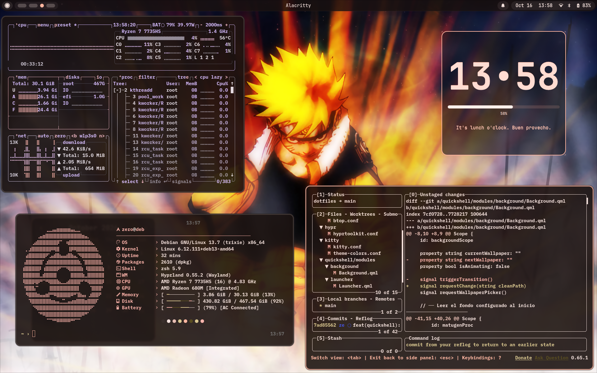
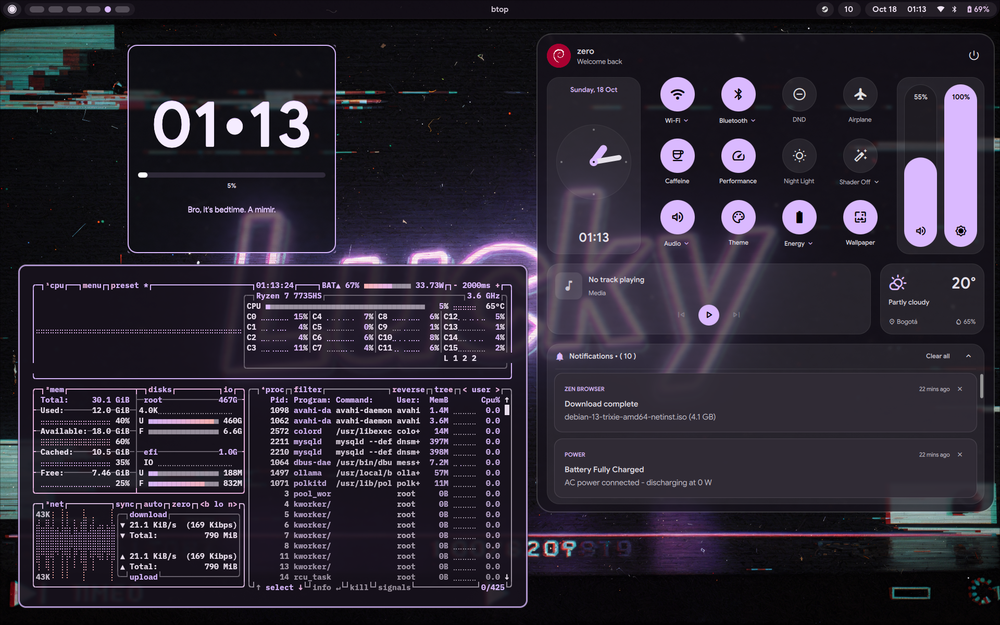
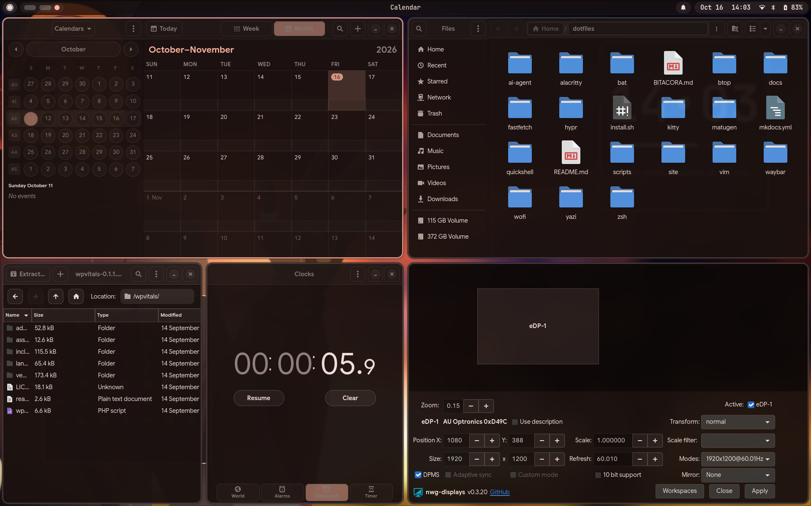
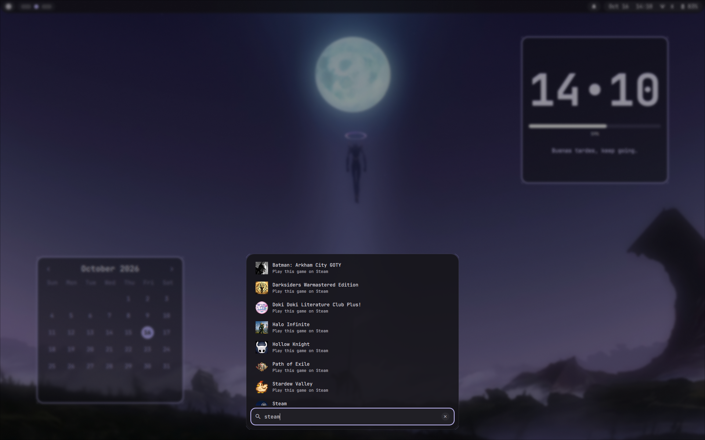
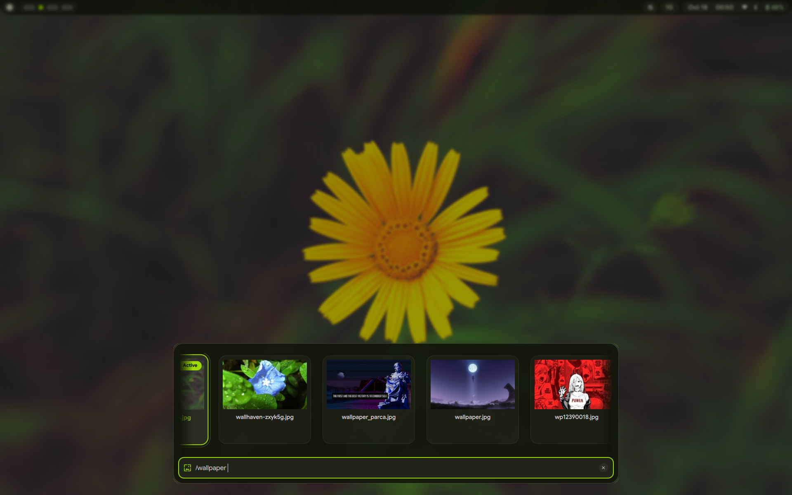
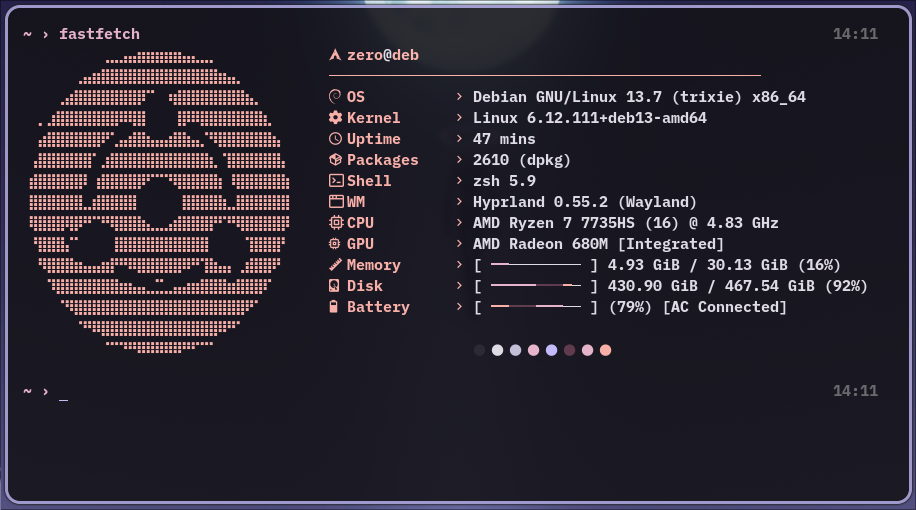
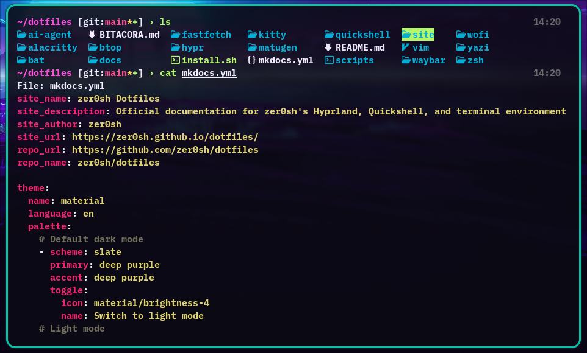
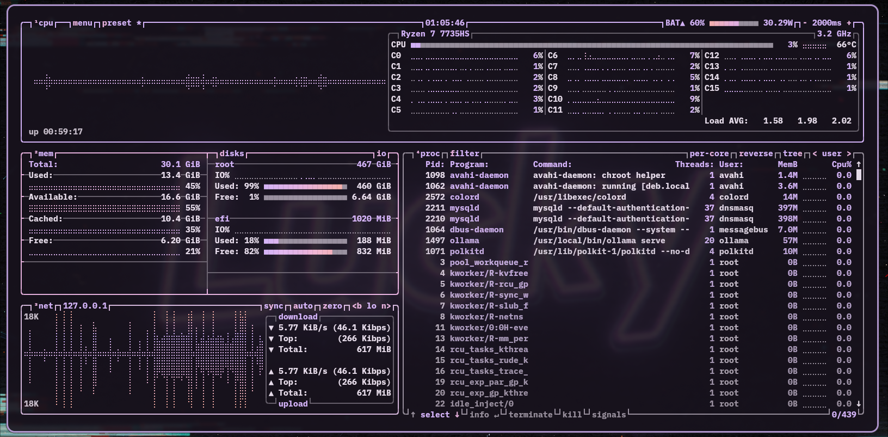

Visual Showcase & Gallery
A visual catalog demonstrating the aesthetic cohesion, Material Design 3 theming, window tiling, and utility suite configured across zer0sh's dotfiles environment.
1. Desktop & Tiling Overview
A full overview of the Hyprland tiling workspace featuring Alacritty, Fastfetch telemetry, Lazygit for interactive version control, desktop clock widget, and the top-centered Waybar pill status bar.


Key Elements Highlighted:
- Tiling Composition: Active window borders automatically accented with colors generated by Matugen from the desktop wallpaper.
- Status Pill (Waybar): Centralized navigation pill displaying workspaces, active window title, and system tray.
- Terminal Diagnostics: Fastfetch providing hardware telemetry, shell load timings, and system specs.
- Git Workflow: Lazygit running natively inside Alacritty using BlexMono Nerd Font typography.
2. GNOME & GTK Applications Suite
Dynamic Material You theming applied universally to modern (GTK 4 / Libadwaita) and classic (GTK 3) applications.

Applications Featured:
- GNOME Calendar (
gnome-calendar): Monthly agenda layout adopting current surface and accent color schemes. - Nautilus (
nautilus): GNOME Files manager adhering to system dark mode and custom sidebar tokens. - File Roller (
file-roller): Classic archive manager rendered with matching window and header bar styling. - GNOME Clocks (
gnome-clocks): World clock and stopwatch utilities running under unified dark palette. - nwg-displays (
nwg-displays): Wayland monitor layout and resolution configuration tool.
3. Modular Status Bar (Waybar)
ChromeOS Shelf-inspired top status bar engineered with rounded capsule pills, dynamic workspace morphing, and a unified system indicator pill.
Key Features:
- Launcher Button: Invokes the Quickshell application drawer and wallpaper switcher via IPC.
- Workspaces: Active workspace dynamically expands into an accented circular indicator.
- Unified Status Capsule: Blends date, time, audio volume, network, bluetooth, and battery monitoring into a single continuous pill.
4. Application Launcher (Wofi)
Dynamic Material Design 3 application launcher featuring centralized fuzzy search, desktop application indexing, and live color styling generated by Matugen.

Key Features:
- Fuzzy Matching: Instant filtering across installed applications and utilities.
- Palette Sync: Background surfaces, selection highlights, and borders dynamically derived from wallpaper tones.
- Design Presets: Built-in support for Material Card, Spotlight, and Grid layouts switchable via
switch-preset.sh.
5. Quickshell Desktop Layer
Floating Launcher & Wallpaper Carousel
The Material Design 3 launcher opened in wallpaper mode (/wallpaper or SUPER + W), rendering a horizontal carousel of 16:9 previews with the active wallpaper highlighted by an accent glow.

Notification Toasts & OSD Cards
Floating notification toasts stacking downwards from the top-center of the display, each with its application badge, title, and body text.

Translucent volume and brightness OSD cards rendered with the same Material You surface tokens, auto-dismissing after two seconds of inactivity.


Key Features:
- Wallpaper Carousel: Fuzzy-filtered wallpaper browser with cached thumbnails, keyboard navigation, and apply-on-enter behaviour.
- Toast Queue: New notifications are prepended into the top slot and push older cards downwards through a
movetransition (maximum of four concurrent toasts). - OSD Placement: 360 x 56 px cards anchored 46 px below the 36 px Waybar strip, so status indicators remain visible while the card animates in.
- Palette Sync: Lazily instantiated Wayland layershell surfaces styled exclusively from Matugen
surface_container,outline, andon_surfacetokens.
6. Terminal & CLI Utilities
Fastfetch System Telemetry
Custom braille logo art, structured key-value hardware specifications, dual-line progress bars (RAM, disk, battery), and active Matugen color swatches.

Bat Syntax Pager & Cat Replacement
Modern replacement for cat configured with clean headers, language-specific syntax highlighting, tab standardization, and non-paging streaming stdout.

btop Resource Monitor
Full terminal dashboard rendering CPU, memory, disk, and process panels with the Matugen palette generated from the active wallpaper.

Vim Dynamic Theme Setup
The repository vimrc running under the matugen colorscheme, with the synchronized vim-airline statusline at the bottom.